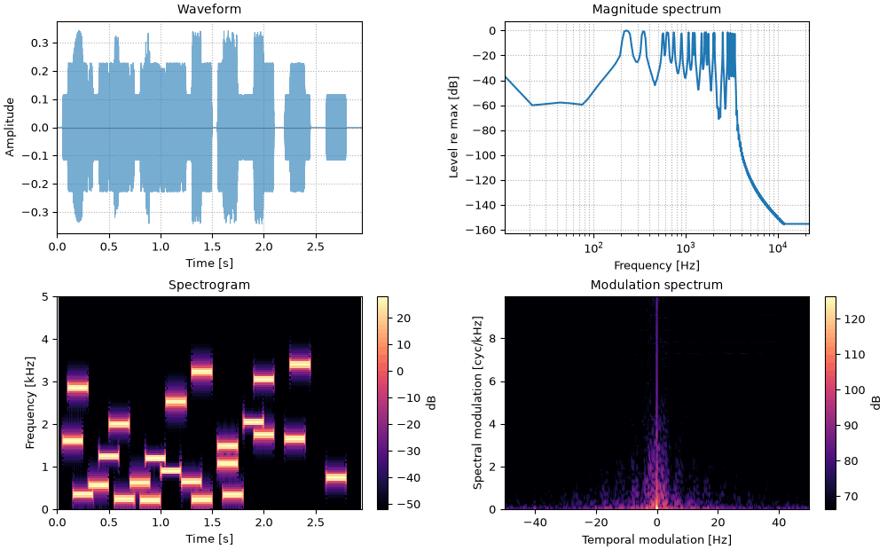

A few stimuli that turn up again and again in hearing research, each built in a line or two
from sonore's generators.
Speech-shaped noise: noise with the long-term spectrum of speech, and none of its modulation, and the long-term spectra of a male and a female talker.
Beats and roughness: two tones close in frequency, from a slow wobble to roughness to two separate tones, and amplitude modulation as the same thing seen another way.
Binaural beats: one tone in each ear, a beat that exists only in the head.
import matplotlib.pyplot as plt
import numpy as np
from scipy.signal import sawtooth
import sonore as so
plt.rcParams.update({"font.size": 9, "axes.titlesize": 10, "figure.dpi": 100})
FS = 44100
def finish(snd):
"""How every sound in the gallery is played: 5 ms ramps, RMS 0.1, peak at most 0.95."""
snd = snd.ramp(5e-3).normalize(rms=0.1)
return snd.normalize(peak=0.95) if snd.peak > 0.95 else snd
def show(snd, fmax=4000, win_dur=50e-3):
"""so.overview: waveform, spectrum, spectrogram and modulation spectrum.
Returns the figure and the panels the playhead follows."""
fig = so.overview(snd, win_dur=win_dur, figsize=(10, 6.2), fmax=fmax)
return fig, [ax for ax in fig.axes if ax.get_title() in ("Waveform", "Spectrogram")]
Press play and a line follows the sound across every time axis in its plots. Click any time
axis to play from that point. The audio is lossless, since compression would alter the binaural sounds.
Start with your volume low.
Speech-shaped noise
A masker with the long-term average spectrum of speech (LTASS) covers the same frequencies as
a talker without carrying any words. Long-term spectra of speech are much alike from one
language to another (Byrne et al., 1994). so.long_term_spectrum averages Welch power spectra
over a set of recordings, weighted by duration, and to_sound (noise by default) turns it into Gaussian
noise with that spectrum. Here the recordings are the three CMU Arctic sentences in the
repository, from two talkers, each brought to the same RMS first so that neither talker
dominates by being louder.
Code
sentences = [
so.load(f"docs/speech/{name}.flac").normalize(rms=0.1)
for name in ("bdl_arctic_a0131", "rms_arctic_a0132", "rms_arctic_a0133")
]
ltass = so.long_term_spectrum(sentences)
ssn = ltass.to_sound(3, sentences[0].fs, rng=0)
Long-term spectra
The long-term spectrum of the three sentences (smoothed to a third of an octave), and the
measured spectrum of 3 s of noise made from it. They agree within 1 dB from 100 Hz to 7 kHz.
The level is highest from about 100 to 500 Hz, where the talkers' voice pitch and first
formants lie, and is about 16 dB lower by 1 kHz.
The noise itself. It has the spectrum of speech but none of its modulation: the spectrogram is
even, and the modulation spectrum is a single line at zero rate, where that of the sentences
would spread over the slow rates of syllables and words.
Those sentences are all by male talkers. Averaged over many talkers, Byrne et al. (1994) found
male and female long-term spectra nearly the same from 250 Hz to 5 kHz, with male ones higher at
160 Hz and below, where their fundamentals lie. Two single sentences, the same words read by one
male talker (bdl) and one female talker (slt), can differ by more. The cell prints how each
sentence's power divides among octave bands.
Code
pair = [so.load(f"docs/speech/{name}_arctic_a0131.flac").normalize(rms=0.1) for name in ("bdl", "slt")]
pair_spectra = [so.long_term_spectrum([sentence]) for sentence in pair]
octave_edges = [63, 125, 250, 500, 1000, 2000, 4000, 8000]
print("octave from [Hz] " + "".join(f"{low:>6}" for low in octave_edges[:-1]))
for speaker, spectrum in zip(("bdl", "slt"), pair_spectra, strict=True):
power = 10 ** (spectrum.level / 10)
shares = [
10 * np.log10(power[(spectrum.f >= low) & (spectrum.f < high)].sum() / power.sum())
for low, high in zip(octave_edges[:-1], octave_edges[1:], strict=True)
]
print(f"{speaker}, share [dB] " + "".join(f"{share:6.1f}" for share in shares))
The two long-term spectra, smoothed to a third of an octave, each relative to its own peak. Below
125 Hz the female talker's sentence has almost nothing, since the female fundamental never goes that
low, and the octave from 125 to 250 Hz, where the female fundamental lies, holds most of its power.
In this pair the female spectrum is also lower from 2 to 4 kHz and higher from 4 to 8 kHz.
Two tones of equal amplitude at f_1 and f_2 add to one tone at their mean frequency whose
envelope rises and falls |f_2 - f_1| times a second:
\cos 2\pi f_1 t + \cos 2\pi f_2 t = 2\cos(\pi (f_2 - f_1) t)\,\cos(\pi (f_1 + f_2) t).
When the difference is a few hertz the ear follows the envelope and hears a single tone that
waxes and wanes. When it is faster, the fluctuation is no longer heard as a wobble but as
roughness. When the two tones are farther apart than an auditory filter is wide, they are heard
as two smooth tones again. Plomp & Levelt (1965) found two pure tones sound most dissonant at
about a quarter of a critical bandwidth apart. At 440 Hz an ERB (Glasberg & Moore, 1990) is
about 72 Hz wide. Each example pairs 440 Hz with a second tone.
Code
def beating_pair(df, f=440, dur=3.0):
"""Tones at f and f + df, equal in amplitude."""
return so.pure_tone(dur, FS, f) + so.pure_tone(dur, FS, f + df)
Slow beats, 4 Hz
440 and 444 Hz: one tone whose loudness swells and fades four times a second, as the
waveform's envelope does. The two tones are too close for the spectrum to separate.
440 and 480 Hz: a 40 Hz fluctuation, too fast to follow as loudness, and too fast to see in
the waveform at this scale. It sounds rough. The spectrum just separates the two tones.
The same wobble made the other way: a 1 kHz tone, amplitude-modulated at 4 Hz with full depth
by so.amplitude_modulate. Its spectrum is the carrier and two sidebands 4 Hz either side,
each 6 dB down, so a modulated tone and a set of beating tones are one and the same.
Put the two tones in different ears instead, 440 Hz on the left and 444 Hz on the right. Each
ear alone hears a steady tone, so nothing in either ear beats. Their interaural phase difference
turns through a full cycle four times a second, and the binaural system, which follows the
phase of low-frequency tones, hears that: the image moves or wobbles inside the head. Binaural
beats are heard only at low frequencies, and only for small differences (Licklider, Webster &
Hedlun, 1950). They need headphones.
Binaural beats, 4 Hz 🎧
440 Hz in the left ear, 444 Hz in the right. Both waveforms are steady; the interaural
correlation, measured in 10 ms windows, follows \cos(2\pi \cdot 4\,t), which is where the
beat is.
Sequences of short tones at random frequencies, several at once, are raw material for
experiments on auditory streaming and on informational masking. Here the frequencies are drawn
uniformly on the ERB-number scale, which spaces them evenly along the cochlea rather than in
hertz.
Code
rng = np.random.default_rng(0)
def tone_sequence(freqs, tone_dur, gap_dur):
"""Tones at `freqs`, each with 10 ms ramps and a random starting phase, separated by gaps."""
parts = [so.silence(gap_dur, FS)]
for f in freqs:
tone = so.pure_tone(tone_dur, FS, f, phase=rng.uniform(-np.pi, np.pi)).ramp(10e-3)
parts += [tone, so.silence(gap_dur, FS)]
return so.concat(parts)
Three random streams
Three concurrent streams of eight 200 ms tones, each stream at its own rhythm, with
frequencies drawn between 200 and 4000 Hz on the ERB-number scale.
s1_three_random_streams.flac, 3.0 s, mono

Code
erb_lo, erb_hi = so.freq_to_erb([200, 4000])
streams = [
tone_sequence(so.erb_to_freq(rng.uniform(erb_lo, erb_hi, 8)), tone_dur=0.2, gap_dur=gap)
for gap in (0.05, 0.1, 0.15)
]
sound = finish(sum(so.match_lengths(streams)))
fig, playhead = show(sound, fmax=5000, win_dur=20e-3)
Band-limited waveforms
A square wave or a sawtooth has harmonics up to infinity. Sampled, those above the Nyquist
frequency (half the sampling rate) fold back to frequencies below it, where they are aliases
unrelated to the pitch. sonore's so.square_wave, so.sawtooth_wave and so.pulse_train are
band-limited unless asked otherwise: each is a sum of harmonics, and each harmonic fades out as
it nears f_max (by default 0.45 of the sampling rate). The difference is easiest to hear on a
glide. A sawtooth rising four octaves, from 110 to 1760 Hz at a 16 kHz sampling rate, has 72
harmonics below Nyquist at the start and 4 at the end. Band-limited, its harmonics leave one by
one as they rise. Computed sample by sample from the running phase, every harmonic that crosses
Nyquist folds back as a tone that falls while the pitch rises.
Code
glide_fs, glide_dur = 16000, 4.0
glide_times = np.linspace(0, glide_dur, 401)
glide_f0 = 110 * 2 ** (4 * glide_times / glide_dur) # four octaves, equal steps per second
A band-limited glide
Band-limited: so.sawtooth_wave on the F0 contour, given as (times, values).
Glasberg & Moore (1990). Derivation of auditory filter shapes from notched-noise data. Hearing Research 47. doi:10.1016/0378-5955(90)90170-T.
Kominek & Black (2004). The CMU Arctic speech databases. Proc. 5th ISCA Speech Synthesis Workshop, 223–224. ISCA Archive. The sentences, by speakers bdl, rms and slt.
Licklider, Webster & Hedlun (1950). On the frequency limits of binaural beats. J. Acoust. Soc. Am. 22(4), 468–473. doi:10.1121/1.1906629.
Plomp & Levelt (1965). Tonal consonance and critical bandwidth. J. Acoust. Soc. Am. 38(4), 548–560. doi:10.1121/1.1909741.